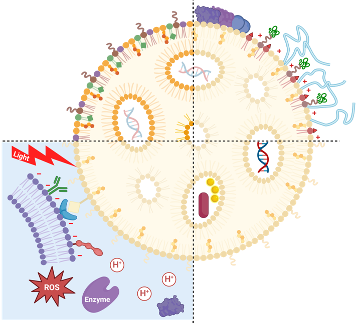

|
Zhaoyu Liu
I'm a Masters student in Biomedical Engineering at Johns Hopkins University, where I'm working on fabricating and designing foldable microelectrode arrays for organoids and 3D mapping of cardiac organoids.
Previously, I completed my Bachelor's in Biomedical Engineering at the Chinese University of Hong Kong, where I worked on various projects including EEG signal processing, sweat sensor fabrication, and a Virtual Reality system for stroke rehabilitation.
Email: zliu220@jh.edu /
CV /
Google Scholar /
Github /
LinkedIn
|

|
|
|
The Johns Hopkins University
Masters Student, Biomedical Engineering
August 2023 - July 2025 (expected)
Overall GPA: 3.90/4.0
|

|
Chinese University of Hong Kong
Bachelor of Biomedical Engineering
September 2019 - July 2023
Overall GPA: 3.72/4.0, First Honor
|
|
|
ETH Zürich
Term Exchange
February 2022 - September 2022
|
|
|
A Trainable Sequence that Learns and Recognizes Two-Input Sequence Patterns
Jan, H.*, Zhaoyu, L.*, Tommaso, S.*, & Pietro, P*. (2022)
TENCON 2022, November 2022
PDF
|
|
|
Screening for Developmental Dyslexia in Hong Kong Chinese Children Using Resting- and Task-State EEG with Convolutional Neural Networks
Yang, Yaqi; Liu, Zhaoyu; Wong, Brian W.L.; Huo, Shuting; Wang, Jie; Lee, Tan; Hoeft, Fumiko; Maurer, Urs‡.
Under review at Journal of Child Psychology and Psychiatry
|
|

|
Programmable Lipid Nanoparticles for Precision Drug Delivery: A Four-Domain Model Perspective
Liu, Zhaoyu; Chen, Jingxun; Xu, Mingkun; Yong, Ken-Tye‡; Wei, Yuanyuan‡; Ho, Ho-Pui‡. (2024)
arXiv preprint https://doi.org/10.48550/arXiv.2408.05695
PDF
Synopsis Submitted to Chemical Society Review
|
|
* Indicates equal contribution
‡ Indicates correspondence author
|
|
Presenter: Zhaoyu Liu. Jan, H.*, Zhaoyu, L.*, Tommaso, S.*, & Pietro, P*. (2022). A Trainable
Sequence that Learns and Recognizes Two-Input Sequence Patterns. PowerPoint presented at TENCON 2022,
November 2022.
Presenter: Yang, Yaqi. Yang, Yaqi; Liu, Zhaoyu; Wong, Brian W.L.; Huo, Shuting; Wang, Jie; Lee, Tan;
Hoeft, Fumiko; Maurer, Urs. Screening for Developmental Dyslexia in Hong Kong Chinese Children Using
Resting- and Task-State EEG with Convolutional Neural Networks. Poster presented at The Association for
Reading and Writing in Asia (ARWA) 8th Annual Conference, February 29 - March 1, 2024.
* Indicates equal contribution
|

|
Johns Hopkins University
Baltimore, MD, USA
Department of Chemical and Biomolecular Engineering, Prof. David H. Gracias's Lab
September 2023 - Present
• Developing foldable microelectrode arrays for organoid research
• Conducting 3D mapping of cardiac organoids
|
|
|
Chinese University of Hong Kong
Hong Kong, China
Department of Biomedical Engineering, Prof. Raymond Tong's Lab
September 2022 - April 2023
• Final Year Project: Developed a Virtual Reality system for stroke rehabilitation using Unity3D and Oculus Quest 2
• Project awarded Silver Award at the 48th Geneva International Exhibition of Inventions
|

|
Chinese University of Hong Kong
Hong Kong, China
Department of Psychology, Prof. Urs Maurer's Lab
September 2022 - April 2023
• Implemented Graph Neural Network code for EEG data processing
|
|
|
University of Zurich
Zurich, Switzerland
Clinic for Child and Adolescent Psychiatry and Psychotherapy, Prof. Silvia Brem's Lab
June 2022 - September 2022
• Intern in Developmental Neuroimaging
• Explored EEG and fMRI data processing techniques
• Investigated correlation between dyslexia classification accuracy using Riemannian Classifier and subjects' reading abilities
|
|
|
Chinese University of Hong Kong
Hong Kong, China
Department of Biomedical Engineering, Prof. GAO Zhaoli's Lab
September 2021 - December 2021
• Student Helper
• Assisted in sweat sensor fabrication
• Developed MATLAB program for heart rate data collection from wearable devices
|
|
|
Chinese University of Hong Kong
Hong Kong, China
Department of Biomedical Engineering, Prof. Raymond Tong's Lab
May 2021 - August 2021
• Summer Research Student
• Gained expertise in EEG signal processing, deep learning, machine learning, and Riemannian-based classifiers
• Participated in a group study comparing Chinese and English language processing using EEG
|
|
|
Chinese University of Hong Kong
Hong Kong, China
Department of Biomedical Engineering, Prof. DUAN Liting's Lab
March 2020 - March 2021
• Student Helper
• Acquired skills in cell culture, transfection, amplification, Southern blot, Western blot, and imaging
• Gained knowledge in optogenetics
|
- Received Academic Excellence Scholarship for Non-local Fee-paying Students 2022/23 at the Chinese University of Hong Kong, on June, 2023
- Received Silver Award in 48th Geneva International Exhibition of Inventions for my final year project, on May, 2023
- Received Chung Chi College Departmental Prize Biomedical Engineering at the Chinese University of Hong Kong, on March, 2023
- Received BME Outstanding Achievement Scholarship 2021-22 at the Chinese University of Hong Kong, on Aug, 2022
- Received Yasumoto Int'l. Exchange Scholarship.(NL) at the Chinese University of Hong Kong, on Aug, 2021
- Selected as Dean's List, 2020-2021 at the Chinese University of Hong Kong, Faculty of Engineering, on July, 2021
- Received Class of 1977 Fortieth Graduation Anniversary Scholarship at the Chinese University of Hong Kong, Chung Chi College, on April, 2021
- Received Chung Chi College Class Scholarship at the Chinese University of Hong Kong, Chung Chi College, on Oct, 2020
- Selected as Dean's List, 2020-2021 at the Chinese University of Hong Kong, Faculty of Engineering, on Jan, 2020
|
|
|
I love traveling, trekking, hiking, singing, playing sports, playing video games, and thinking about psychology-related phenomena.
|
|
|
Past President of Chung Chi College Toastmasters Club
|
|